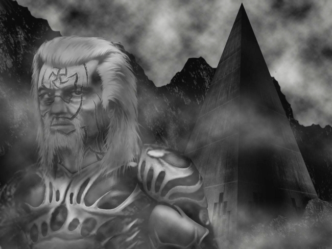

Kiss (Part 2)
by
Andy Robertson
To Out (Part 1) — the first story in this series.
Scyrr, unmoving, at the center of the Redoubt.
The jeweled beauties and the Great vie for his attention, and he controls them with a movement of the head, with a glance, and with half a word.
They are deeply uneasy. The wild behaviour of the Seventeen over the past month has shattered so many settled certainties. Here, now, Scyrr's toying refusal to be what he should be is bad, and this discourtesy by his lieutenant is one more confirmation. By itself it is small, it was unimportant ... but it will not leave the mind. The intentions of Onn and his paramor were so clearly demonstrated, by every turn of their heads, by the tilt of their limbs, by the way they patterned their conversation, by their breath, by their smell. It was not so much that they left, together. It it was that they left without pause or excuse or explanation or graceful turn, without concealment, without the lies that were necessary, expected, in that time and that place.
Lies, lies, are the real language everyone speaks, all the time. And those who sensed the messages these two were broadcasting are striving to deny it to themselves, are striving to change the truth by denial. Insisting, even, absurdly, that this was an honorable courtship that may end in marriage, Onn and this beautiful unknown woman, its looseness only the preliminary indulgence expected and permitted to the Great and the Heroes.
So they insist, so they beg, uttering only a very little with the tongue, but pleading their case with looks, with the set of their shoulders, with the placing of their feet, with the tilt of their heads, with the rhythym of their breath, with their glancing of their eyes and the shading of their brows, with the shifting of their hips.
And so Scyrr denies.
She turns again to her task: and now Onn cries and writhes, every crooked scar bleeding freely. And the dark bed drinks his blood, as it drinks the rain that falls ever more heavily inside the room of flesh and glass.
Now one approaches, and speaks to Scyrr.
"How did you defeat them, Hero?"
She is smiling, friendly. In fact she is laying a claim upon him, hoping to shape him, hoping make him what he should be. And though there may still be others so foolish as to see this as a light and laughing question, Scyrr knows her for a brave woman, a true daughter of the Redoubt, with clear eyes and a fear in her heart she cannot hide, and in his way he approves.
"Defeat whom, respected Lady?"
"Sire, the monsters. The Giants, the Beasts, and the Eaters, that you fought, Out in the Land."
And now Scyrr's voice is light, and he speaks without strain or emphasis.
"There was no battle. No combat. No war. They did not attack us."
His voice fills the arena, though he does not speak loudly. All are silent as he violates every oath of secrecy and every decency. Byssos, standing far away but unable not to hear everything Scyrr utters, cringes as from a blow.
"There was no battle. No war. Out There, they were as kind and gentle to us as they could be."
He cries. And surely he is dying, to make such a sound.
The material Redoubt is layer after layer of armour for the body and the soul of Man, six hundred gigatonnes of adamantine monochalkon, the greatest home-machine ever created by human love and worship. Her data processing capacity exceeds that of the unDarkened world at its height. She disposes of terawatts of power, appropriating the last high-enthalpy energy source on the dying planet and starving all else. Almost the entire history of the human race has been played out within Her womb: for of all those ever born in all the ages of man, not one in twenty but have drawn their first breath within Her. She has endured seventeen million years, varying in detail, unchanged in Her bone, alive. Nothing in the Land, not even the Watchers, can harm Her physically or even come close to threatening Her. She is the greatest living monster in the Night Lands.
But there is another Redoubt, and She, too, has endured millions of years. She is built of the actions and responses that are generated between human beings. Master and man, husband and wife, mother and child, the Great and the Less. The Guilds, the Civitas, the Monstruwacians and Watchmen, the sweepers and cleaners. The speech, the looks, the eyes, caresses and blows, the wombs of women and the seed of men. The Bright Cities and the Dead Cities and their a swarming secret exchange of blood. The Great, and the secret Great who control them. The virtuous liars and the sinful truthsayers. She is no less complex than the physical Redoubt, and no less carefully structured, no less beautiful or dreadful, no less secret and unknown. And the one Redoubt upholds, generates, secretes, interpenetrates, loves, is, the other.
Scyrr cannot destroy the Redoubt that is built of imperishable metal and deathless fire. But Scyrr believes, hopes, knows, he can possess the other, the true, Redoubt.
He controls the Watch. Among the Thousand Captains, there are not tenscore that would oppose him in a battle. More and more Watchmen have marked themselves as his followers: the tipping point approaches.
He has broken no law. He has in fact harmed no man or woman yet.
He might be killed in a duel. The most ancient check and balance of the Redoubt is this. Any man may be forced to Fight another of his rank, for any reason, or for none, for a mere whim, or for what he need not prove to be more than mere whim. They are a polite people, therefore.
But that means death. Scyrr is not a man broad or tall, but you only have to look at him to know that.
And how many of Scyrr's rank does the Redoubt hold now?
Rank, true rank and status, is not a matter of law. Scyrr remains a simple Captain, in the Redoubt that is built of adamant and lightening. But his charism stirs the other Redoubt, the Redoubt that is grown out of love and blood, to Her center. She trembles before him. And there is only one man whose rank can equal his, only one man who could speak for Her, and whose duty it is to speak now.
With each cry, within the dark room, the witnesses rustle closer, hold themselves more tensely.
The focus of their attention is not sensuality: they have forgotten that. It is something else they are calling, and they compel her.
Her complaint, her despair, her hope, are vanishing now, being consumed by what comes, conjured by this sedir, at the center of the center of the Pyramid, here, where half a billion human minds vibrate as one note. A garment is being removed, is being shrugged off, with the gentleness and impatience of a returning queen indicating that Her vicar must stand down, kindly, implacably.
Scyrr, at the center of his men.
Scyrr, releasing his men: in whom he again wakes the dark message of the Land; to whom he now gives permisson, with a tilt of his head, a movement of his eyes, to do to the assembled Great as they will.
But not to maim or kill, yet. That will not be necessary. For above all, the Seventeen are empowered by the impossibility that they should do wrong. They are Heroes, and their part in the body that is the Redoubt is to be the archetypes, to act on the stage of lies, and to proclaim as true the lies by which all shall live. If they refuse to do what was right then the meaning of right and wrong must obediently change. And therefore each one of them is stronger, as strength is counted in this arena, than a thousand of the Great, who retire before their actions of hurt, puzzled, sick unto death, perceiving dreadful wrong.
The Great are not cowards. There are no cowards among the folk of the Redoubt. But how can they attack these men? How can they even defend against them? These men are Heroes.
One of the Seventeen seizes the gentle woman who has been courting him and begins to draw patterns in her face, like the patterns cut into his. She strives to cry aloud, but cannot, for he will not permit her to feel fear or to flee pain. He keeps holding her, shutting her mouth, moving her head and repositioning her hands, without force but with utter authority, as she tries to speak and move. He rules her, and she watches her blood seep in wonder. He is bringing her into the new world, and after a little time she shows her joy and gratitude freely.
One dances madly. His movements are not the movements of one who is merely ignoring the people round him, but the curvets and spins of one for whom they do not exist, for whom only his Brothers exist, and all other human beings have become lumps of tissue without meaning or ambience. It is a small thing to recount, but a terrible thing to witness: unless you are one of those who dance back, who strive to find a language of motion in which your existence cannot be denied, and are favoured with the grace of recognition.
One touches the eyes of the people around him. So fast, so gently and surely, without causing pain or doing harm. His fingernails trace the inside of the arc of bone that guards the lower eye: he shifts an eyelid, strokes the membrane over the naked seat of vision, brushes the eyelashes along their arc with an absolutely regular and even touch. Faster than they can blink, realise, or retire. Your wife, your husband, your dearest love, would not touch you so closely.
The others do yet other things.
They seemed human. They were human. But in fact they only touch what is human on one side of their beings. The other part touches something else, something with a different idea about what it means to be human, that they are explaining now.
The night will be long, and there seems no limit to the new knowledge they are bringing.
More and more of the guests are learning, and some are learning with joy.
She moves and tightens, above him, suddenly caught:
Never . . .
Many times. She has been through these gates many, many times. But she always took herself Out, on the journey to That Place, carefully Prepared and trained, armoured and armed. How long is it since she was a patent and not an agent in these things?
She was never the one helpless in the Night. Never before. It was not he who was the focus of this Operation, after all. That was a lie meant to disarm, and it disarmed her, and now she is helpless before the return of Herself.
What was the solvent, the alkhest, that dissolved her in this fire?
Part of her can still think and reason. And with that dwindling part, the child from the Dead cities with her hopes and hints and half-awareness of her real self, she realises that it was her pity, her sympathy for his pain and wounding, for the damage he was suffering, that finally let This One through. For pity and sympathy may not be Love, but they are kindreds, messengers from that other realm where she will never dwell, poor Meyr. And a touch, a backward glance from the rosy God, was all it took to change her to this.
Desperation and chaos, glee and joy, spread. And at last, as he must, as he should have weeks since, Byssos approaches Scyrr and they confront each other. But this battle has already been lost. Byssos may cry Scyrr traitor, but Scyrr has been utterly loyal. Scyrr is a suitor, his loyalty is to his beloved, his intention is to possess Her, and he will brook no rival.
So Byssos talks. But he can not talk as Scyrr talks. This goes on and goes on for some time.
Then the great hall is silent, utterly silent, as Scyrr strikes the Master Monstruwacan in the face.
She cries now, as Onn cried.
At the centre of the Redoubt, She cries.
In a million rooms, through all the great Pyramid, She cries.
Without changing, her flesh changes. The messages streaming out from it tell a different tale, not one of lies and deceit, hired love and long weariness, but something else entirely. No single cell is transformed, but only all of it.
She is brighter than the eternal Lamps. She is brighter than the ancient Sun. She is too bright to gaze upon, yet you would pluck out your eyes, give up your life, to look on Her: to see Her even once.
Called Venus, Tanit, Freya, red and white. The weak weak thing that rules every other thing, that is the reason for every other thing, that is grown out of love and blood, is now incarnated in one living body and come to make Her choice; of one, or the other, or neither.
The onlookers make the ancient signs. That they have given up, long ago what would have quickened them to lust, and they may see Her and live.
And each takes off its mask, and bows down its head, as She speaks.
"Leave Us."
And now, it begins again, and it begins in earnest. A conversation, not with words, not even with weapons, but flesh against flesh, like Beasts, the Seventeen and their surgent following against the rest. Joy here in this great room, and joy spreading beyond, spreading through all the passages of the great Pyramid. The Beasts will rule here now. They have sent Scyrr their prophet to explain this fact, and he brings joy and holy truth.
As he breaks men he is not angry. He is happy. Now he is sure that it will be like this forever, with his Bride.
Onn, in a new world.
Something like control has returned to his mind. But nothing has really changed back to what it was before. All is new. And he knows, it is undeniable, that he is not in the place he has lived in all his life.
That was a place where he was a child, thrilling to hope and her dark sister fear, or fleeing pain, or pursuing beauty; then resting; then rising again to continue. Passing from shadow to shadow.
But he is somewhere new now. Somewhere where there is neither hope nor fear nor pain nor rest, but beauty: only beauty.
Will it be so forever, he wonders? Have time and change also ended?
And he is not Out, either.
Out There, very soon, there was neither rest, nor hope, nor beauty, but only fear and pain. And they too seemed without duration and without measure and without ending. He can remember it now, all of it.
Yet that other time, Out, ended, at last. The pain did not end, but when fear died at last, pain became something new, a new place, where he lived without fear.
He concludes that this, too, will end.
And it is diminishing slowly now. It is not failing in its essence, but, yes, it will end.
He went Out. He was changed once. Now he being changed again, he is changing again.
He watches the changes happen, inside his soul, and he is not afraid, for pain and fear and hope have all gone. Even the ending of this state, that approaches, does not make him afraid.
Which was better? What possessed him when he was Out? Or this?
Pain, without fear? Or beauty, without hope?
A decision must be made. Like a child grazing its knee and seeing the blood, like a boy hardening to the thought of woman for the first time ever, like a baby, in this new world, he waits for it, he watches it form.
And at last, he can speak to Her again, in this place where there are no more lies.
Blood spreads, and soaks into the soft moss, and drains away into the channels and arteries of Mother Redoubt.
The rain that falls through her lungs, and falls upon the two that lie together, not far away, in that room like dark soft glass, is more and more tinged with blood.
"You are She."
"I am."
"We did not know. We did not know. It should not be me. He must be Your husband, not I."
Then Her smile, Her gaze, in the bloody rain.
One hand touches his head kindly. Her eyes consume him: and as he rears to kiss Her again, Her other, Her left hand, spreads before him, the thumb open wide, the veins of the wrist exposed.
And he sees at last what lies there, nestled between the sinews, under the skin.
And he bows his head to touch it and tongue it.
Round, tiny. Unvenomed, surely; and the scar of its placing concealed, till now, by another line of jale ink.
It is not poison. It is rooted in the very soul. Bite it forth, and the soul is bitten forth with it.
And Her last words are commands scribed on his being: like the ink on Her skin, like the scars on his.
"But the bridegroom you have bought from the Land does not please me, Hero.
"Therefore, it shall be you that shall love him, not I.
"Therefore, you shall kiss him, as you kissed him in the Land.
"You shall kiss him, as you have kissed me.
"You shall kiss him, here, Hero.
"You shall bite."
Now it is morning in the great hall, that is become Scyrr's throne room. And among chaos which none dared gainsay, through corridors full of despairing stillness and fear, Onn has returned. He passes the door, and moves forward to his master and his Brothers, among the ruins and the slaves, among the pash of blood and flesh and fruits.
If his eyes seem empty, put that down to weariness. His limbs and body demonstrate triumph, his face shines with love for Scyrr and unthinking mastery of any other being. As he moves toward his chief, circles of communication spread in his wake, visible to him, to Scyrr, and to his other Brothers of the Land and their new kin, and even visible to the terrified survivors of the other side, who are beginning to learn a little, to take instruction, to speak as they must always speak from now on. In the overturn Scyrr has wrought, Onn's freedom from knowledge and his refusal to even to note what has just happened is another poison and another education for these lucky unlucky remaining ones.
And indeed Onn is eager to share with his master and his new Brothers all he has learned. He moves to embrace Scyrr, and the lineaments of his body broadcast love with utter honesty.
And so Scyrr comes forward and holds out his left hand, as he has done a thousand times before.
He holds it out in love and trust to his lieutenant and his Brother. Here, in his throne room, he offers the bones of his wrist, the veins and sinews and what lies between them, to Onn's lips. He offers the Capsule, he makes vunerable his life and his eternal soul, for the Kiss.
The Kiss of love and trust, that was given between the Brothers, Out in the Land.
To Marks (Part 1) — the next story in this series.
© 2003 by Andy Robertson.
Artwork © 2003 by Martin Isitt.